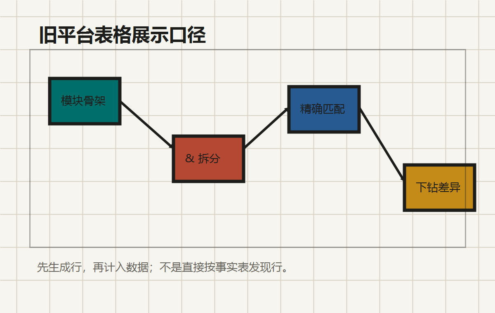

先有行骨架，再做计数
旧平台统计表不会把事实数据里出现过的每个模块都显示出来，而是先拿模块列表作为行集合。
Investigation · 2026-06-03
统计表先生成模块行骨架，再把符合条件的数据计入这些行。脏模块、格式异常模块、 或行骨架之外的模块，通常不会单独成为统计行。

Display Policy
旧平台统计表不会把事实数据里出现过的每个模块都显示出来，而是先拿模块列表作为行集合。
模块字段按 & 拆分后 trim，只有拆分段与目标行模块名完全相等才计入。
普通明细查询仍可能使用 like 或 contains，不能把统计表口径机械套到所有查询。
客户问题延期表部分统计使用 contains(moduleName)，若强行精确拆分会与旧平台产生差异。
Table Routes
第一列固定为模块名；行来自模块骨架并追加总计行；非总计单元格支持下钻。
行名字段为 rowName；列是固定细分原因；只统计 cause 已存在的问题。
固定大类原因列，后端追加共计和比例行；比例行置底并展示两位小数。
按里程碑筛选，行是模块名并有独立总数区域；模块计数使用 contains 口径。
展示响应周期、解决周期和延期率；行使用完整模块列表，按 & 拆分归属。
按功能名聚合，不是按模块名聚合；模块脏值对行展示影响较小。
模块筛选使用 like；查询曲线或曲面时额外排除曲线曲面，避免宽泛命中。
只取 illegal_list 非空数据；指定模块时使用 module_name = moduleName 精确匹配。
Matching Matrix
| 场景 | 示例输入 | 命中行 | 口径 |
|---|---|---|---|
| 统计主表多模块 | 草图 & 工程图 |
草图、工程图 | 按 & 拆分后精确匹配 |
| 脏模块值 | :草图 |
通常不生成独立行 | 不做别名归并 |
| 明细查询 | moduleName=草图 |
包含草图的记录 | like / contains 路径仍存在 |
| 非法议题表 | moduleName=草图 |
module_name 精确等于草图 | eq，不是 like |
Alignment Notes
& 拆分后精确匹配，不把 :草图 归并为草图。